# Google Colab 시작하기
| 이미지 | 설명 |
|---|---|
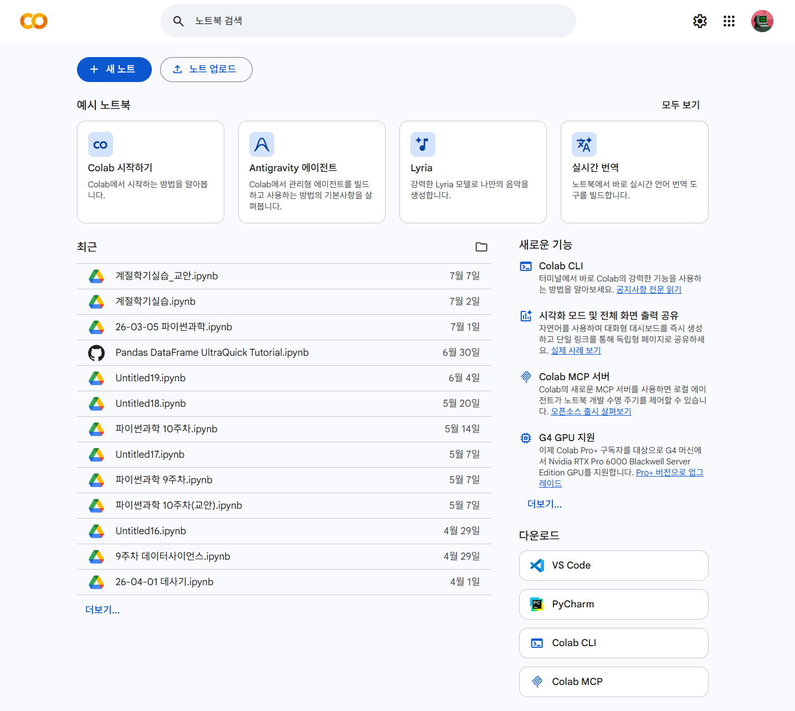 |
Colab 바로가기 |
1. Colab이란?
Colab은 웹 브라우저에서 Python 코드를 실행할 수 있는 실습 환경입니다.
별도의 Python 설치나 개발환경 설정 없이 사용할 수 있기 때문에, 이번 수업에서는 Python 문법 실습 환경으로 사용합니다.
Python 설치 필요 없음
별도 개발환경 설정 필요 없음
Google 계정 + 웹 브라우저
↓
Colab
↓
Python 바로 실행2. Colab의 특징
- 브라우저에서 바로 Python 코드를 실행할 수 있습니다.
- 코드와 설명을 하나의 노트북 파일(
.ipynb)에 함께 저장할 수 있습니다. - 표, 그래프, 이미지 같은 실행 결과를 바로 확인할 수 있습니다.
- GPU가 필요한 실험도 비교적 쉽게 시작할 수 있습니다.
- 최근에는 Gemini, Learn Mode, MCP, CLI 같은 AI 관련 기능도 함께 확장되고 있습니다.
💡 참고: MCP(Model Context Protocol)는 AI가 외부 도구나 데이터를 연결해서 사용할 수 있도록 돕는 표준 방식입니다.
3. 예전 Colab과 지금 Colab
3.1 예전
- 브라우저에서 Python 실행
- GPU가 필요하면 Colab 사용
.ipynb파일로 저장- VS Code에서 만든 코드를 Colab에 복사해서 실행
3.2 현재
최근 Colab은 단순한 클라우드 Jupyter Notebook에서, AI가 코드 작성과 실행 과정을 더 많이 도와주는 환경으로 확장되고 있습니다.
예를 들어 Gemini에게 목표를 설명하면, 코드 작성, 실행, 오류 수정, 결과 분석까지 이어서 도와줄 수 있습니다.
VS Code
↓
Claude Code / Codex
↓
Colab CLI
↓
Colab GPU| 기능 | 의미 |
|---|---|
| Gemini Agent | 노트북 안에서 AI와 대화하며 작업 |
| Data Science Agent | 데이터 분석을 계획하고 실행한 뒤 결과 정리 |
| Custom Instructions | 노트북별 AI 작업 규칙 저장 |
| Learn Mode | 답을 바로 생성하기보다 단계별 학습 지원 |
| Colab MCP Server | Claude Code, Gemini CLI 같은 외부 Agent가 Colab을 조작할 수 있게 연결 |
| Colab CLI | 터미널에서 Colab GPU/TPU runtime 사용 |
| VS Code 연계 | 로컬 개발 환경과 Colab runtime 연결 |
💡 참고: Colab CLI는 2026년 6월 Google Developers Blog에서 소개된 기능입니다. colab --gpu A100처럼 GPU를 요청하고, 로컬 Python 파일을 Colab runtime에서 실행할 수 있습니다.
colab --gpu A100
colab exec -f train.py
colab download result.txt4. 연습문제
1부터 100까지 자연수 중 짝수의 합을 구하시오.
5. 방법 1: 기본 코드 실행하기
5.1 한 셀에서 실행하기
total = 0
for i in range(1, 101):
if i % 2 == 0:
total += i
print(total)| 이미지 | 설명 |
|---|---|
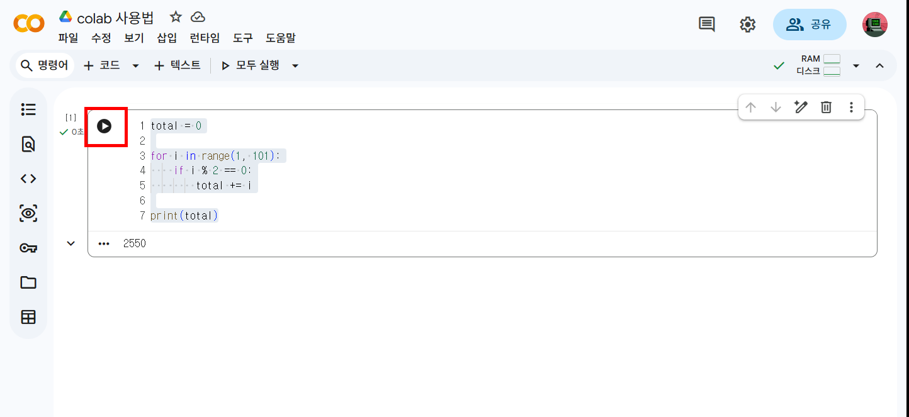 |
실행화면 |
실행 버튼: Ctrl + Enter 또는 Shift + Enter
5.2 셀로 나누기
셀은 나뉘어 있지만 같은 Python 실행 환경을 공유합니다.
| 이미지 | 설명 |
|---|---|
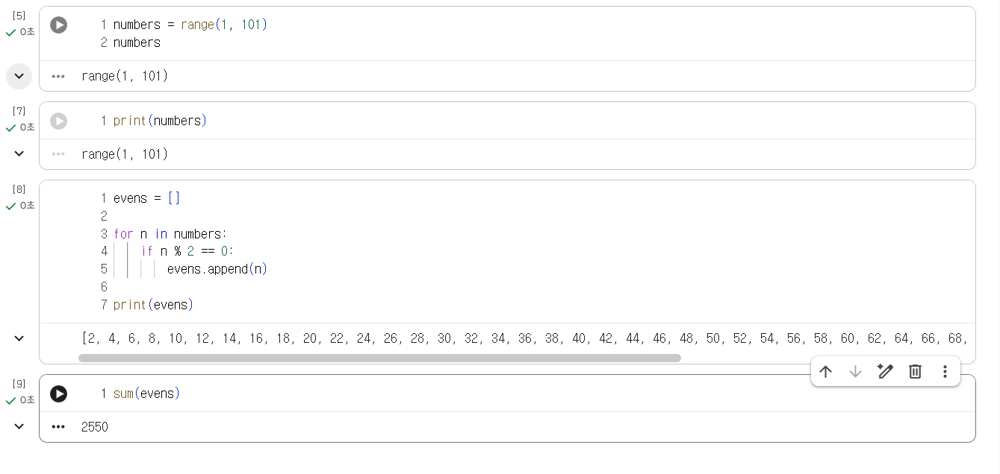 |
실행화면 |
5.3 코드와 텍스트 분리하기
Colab에서는 코드 셀과 텍스트 셀을 나누어 사용할 수 있습니다.
텍스트 셀에는 문제 설명, 조건, 풀이 과정을 적습니다.
# 실습 1. 짝수의 합
1부터 100까지 자연수 중
짝수의 합을 구하시오.
## 조건
- 반복문을 사용한다.
- if문을 사용한다.코드 셀에는 실행할 Python 코드를 적습니다.
total = 0
for n in range(1, 101):
if n % 2 == 0:
total += n
print("짝수의 합:", total)| 이미지 | 설명 |
|---|---|
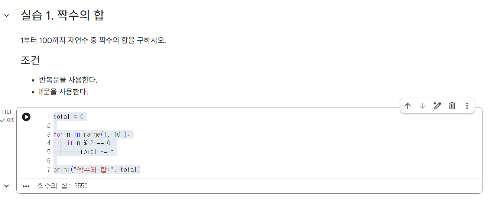 |
실행화면 |
6. 방법 2: 코드를 간결하게 쓰고 표로 보기
6.1 Pythonic 기법 사용하기
Python에는 반복문을 더 짧게 표현하는 방법도 있습니다.
6.2 내장 함수 결합
sum(range(2, 101, 2))6.3 List Comprehension
evens = [n for n in range(1, 101) if n % 2 == 0]
print(evens)
print(sum(evens))💡 참고: List Comprehension은 리스트를 만드는 짧은 문법입니다. 처음에는 어려울 수 있으므로, 기본 for문을 이해한 뒤 비교해보면 좋습니다.
6.4 데이터 분석 환경처럼 사용하기
1부터 20까지의 숫자가 짝수인지 홀수인지 표로 나타내시오.
import pandas as pd
numbers = range(1, 21)
df = pd.DataFrame({
"숫자": numbers,
"구분": ["짝수" if n % 2 == 0 else "홀수" for n in numbers]
})
df| 이미지 | 설명 |
|---|---|
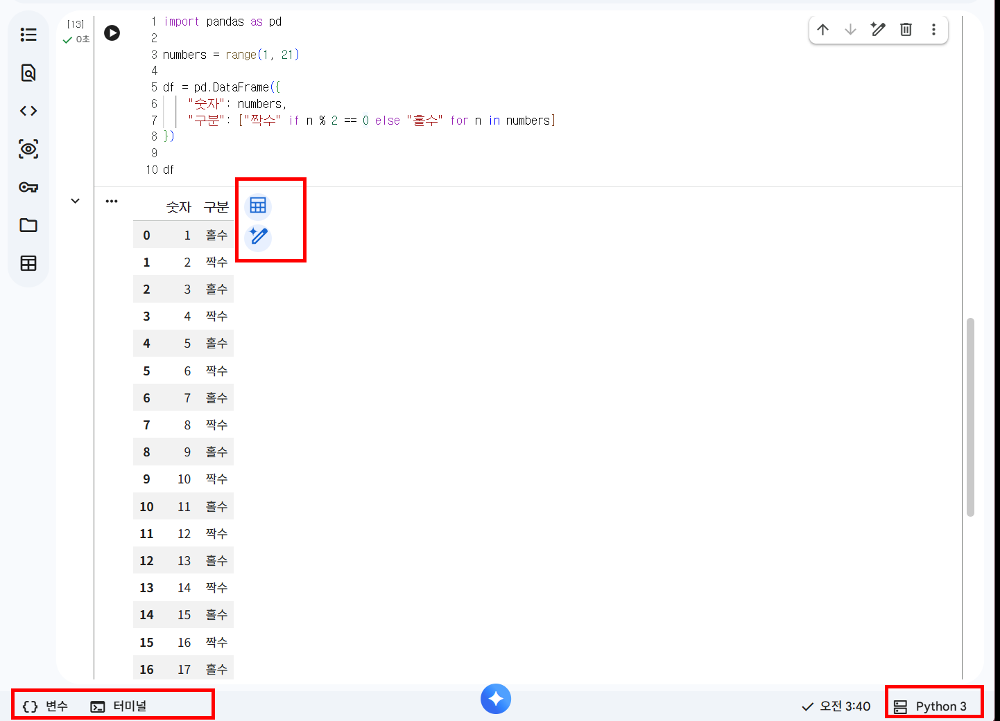 |
실행화면 |
7. 방법 3: 결과를 시각화하고 파일로 저장하기
7.1 그래프 그려보기
1부터 10까지 숫자의 제곱을 그래프로 나타내시오.
import matplotlib.pyplot as plt
x = range(1, 11)
y = [n ** 2 for n in x]
plt.plot(x, y)
plt.show()| 이미지 | 설명 |
|---|---|
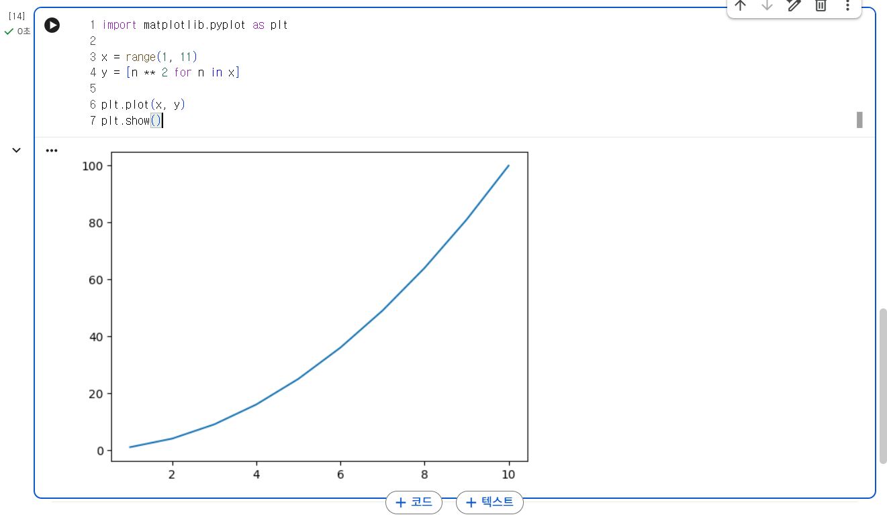 |
실행화면 |
7.2 Colab에서 파일 만들기
Colab에서 만든 파일은 왼쪽 파일 영역에서 확인하고 다운로드할 수 있습니다.
with open("result.txt", "w") as f:
f.write("1부터 100까지 짝수의 합 = 2550")| 이미지 | 설명 |
|---|---|
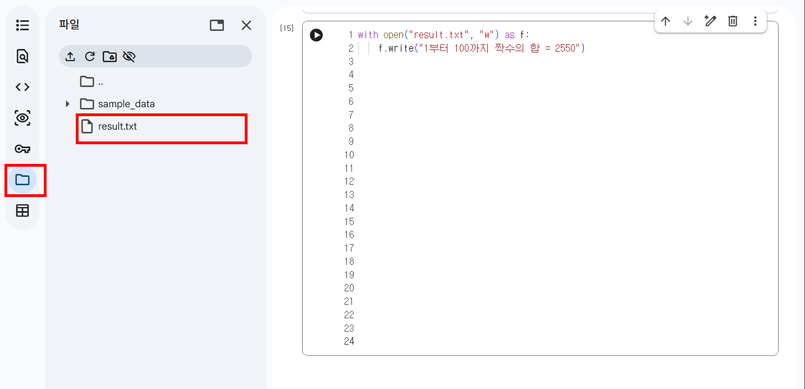 |
실행화면 |
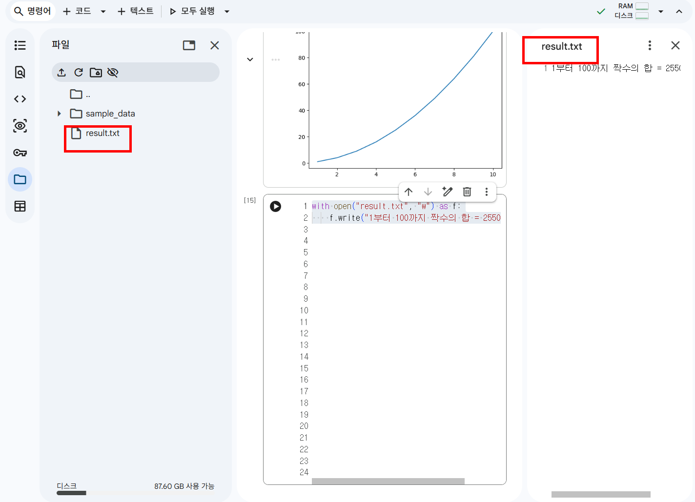 |
result.txt 파일 |
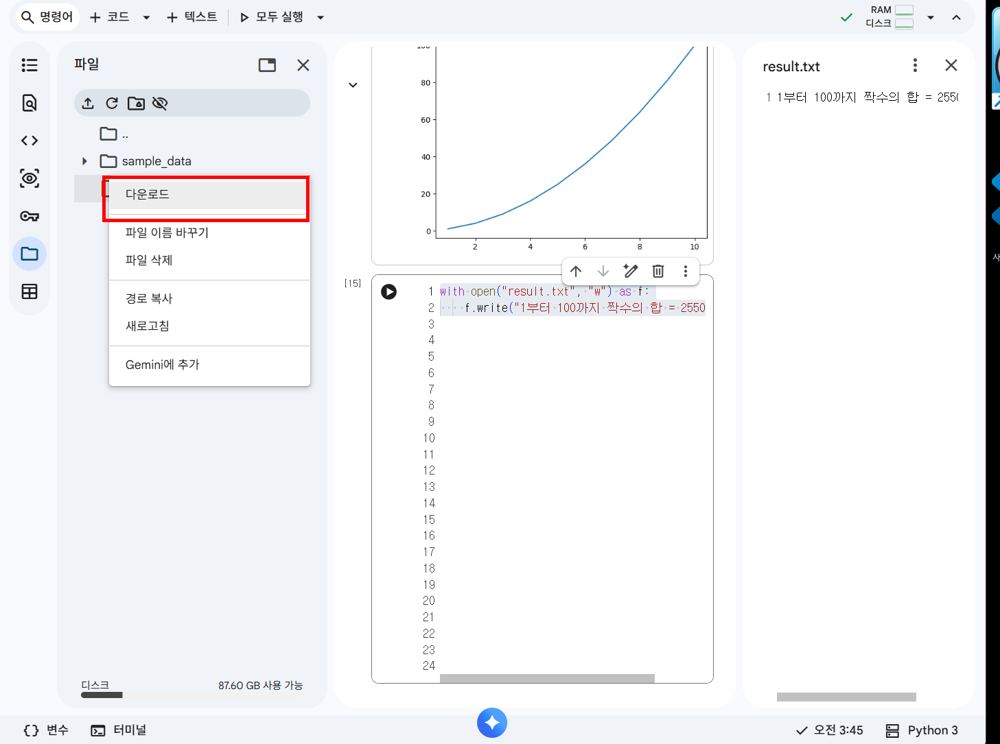 |
파일 다운로드 |
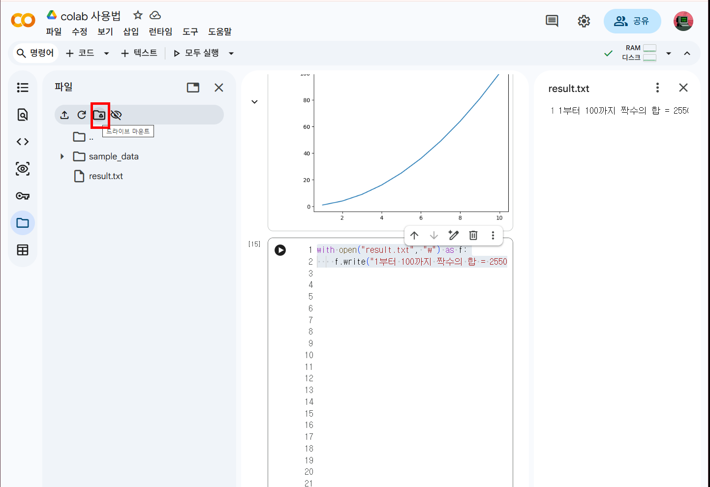 |
Google Drive 마운트 실행 |
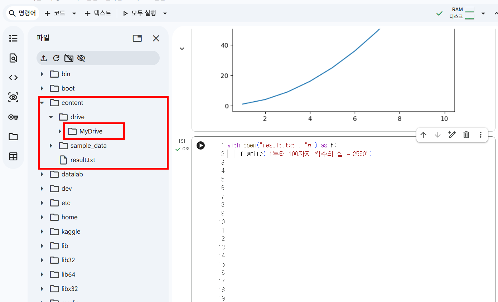 |
Google Drive 마운트 위치 |
💡 참고: Colab runtime은 작업이 끝나면 초기화될 수 있습니다. 오래 보관해야 하는 파일은 다운로드하거나 Google Drive에 저장합니다.
8. 방법 4: AI를 활용하고 GPU 확인하기
8.1 AI 사용해보기
Colab에서는 AI에게 코드 설명, 오류 수정, 추가 질문 생성을 요청할 수 있습니다.
💡 참고: Lyria는 Google DeepMind의 음악 생성 AI 모델 이름입니다. Colab에서는 Python 코드 실습뿐 아니라, 생성형 AI 모델을 실험하는 노트북도 다룰 수 있습니다.
| 이미지 | 설명 |
|---|---|
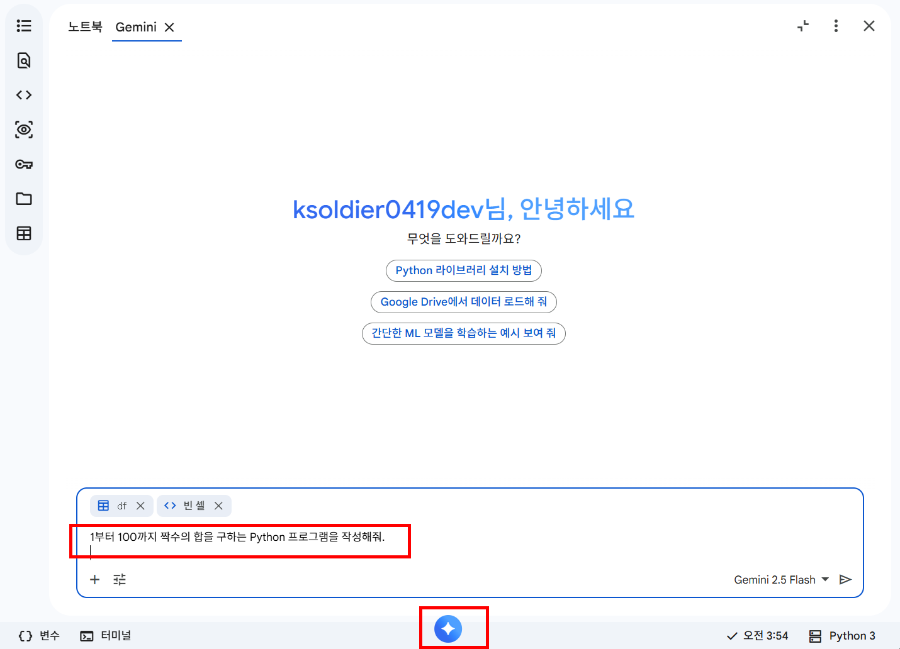 |
AI 질문하기 |
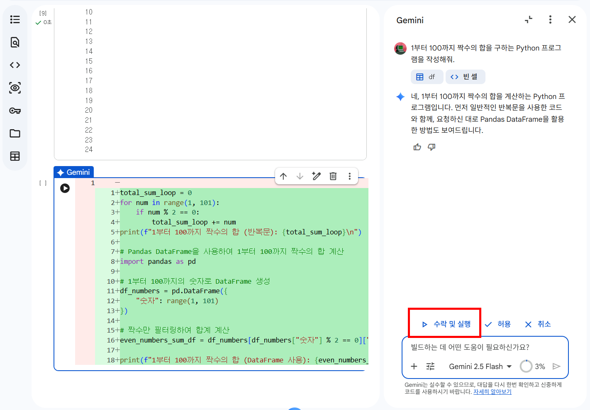 |
AI 답변 확인 |
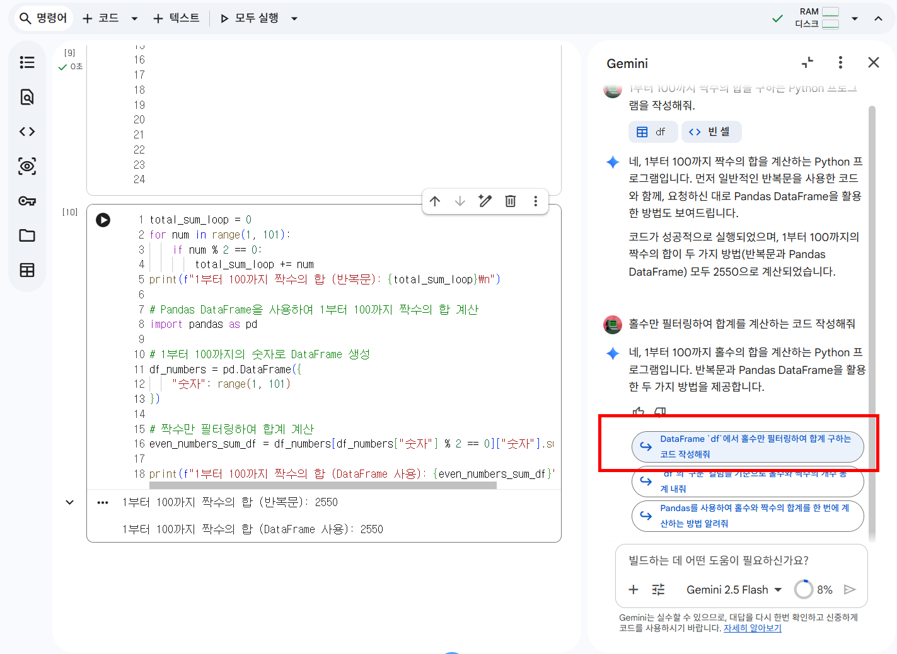 |
추가 질문 생성 |
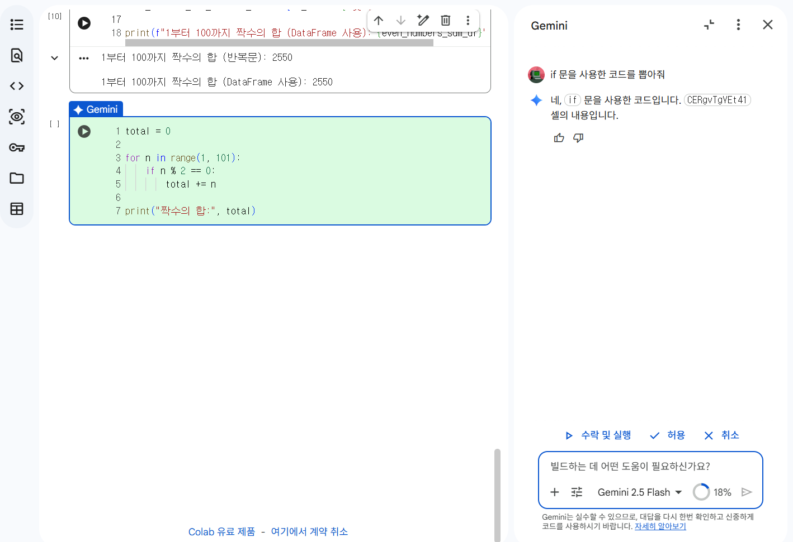 |
선택 질의 |
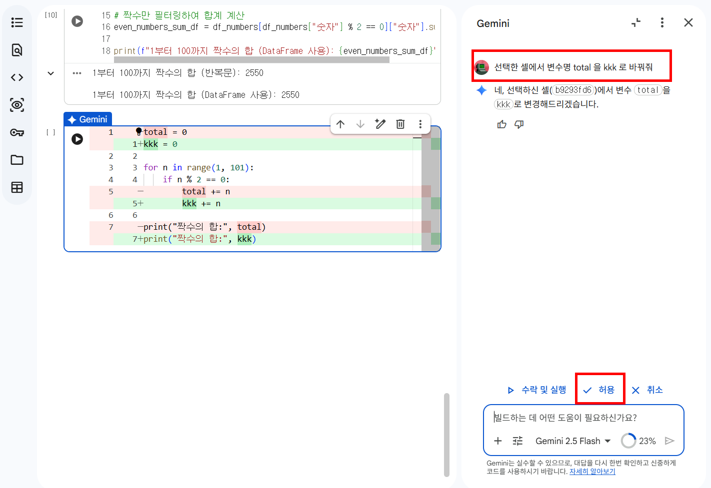 |
코드 수정 |
✅ AI를 사용할 때 확인할 점
- AI가 만든 코드가 문제 조건과 맞는지 확인합니다.
- 실행 결과가 예상과 같은지 확인합니다.
- 모르는 문법이 나오면 바로 복사하지 말고 의미를 먼저 물어봅니다.
8.2 GPU 세팅과 확인
GPU가 필요한 실습을 할 때는 Colab 상단 메뉴에서 runtime 유형을 GPU로 바꿉니다.
일반적인 흐름은 다음과 같습니다.
- 상단 메뉴에서
런타임을 선택합니다. 런타임 유형 변경을 선택합니다.- 하드웨어 가속기를
GPU로 선택합니다. - 아래 코드를 실행해서 GPU가 연결되었는지 확인합니다.
| 이미지 | 설명 |
|---|---|
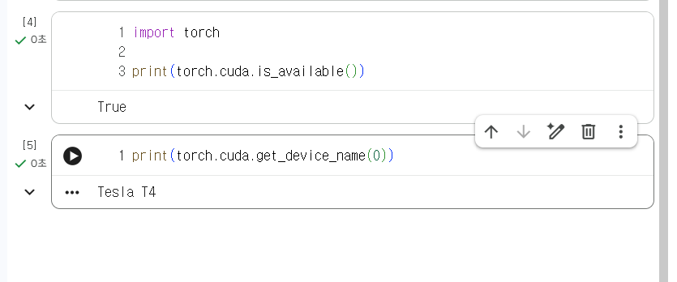 |
GPU runtime 설정 화면 |
import torch
if torch.cuda.is_available():
print("GPU 사용 가능")
print(torch.cuda.get_device_name(0))
else:
print("GPU를 사용할 수 없습니다.")실행 결과에 GPU 사용 가능과 GPU 이름이 나오면 GPU를 사용할 수 있는 상태입니다.
⚠️ 주의: GPU가 연결되지 않았다면 런타임 유형을 다시 확인합니다.